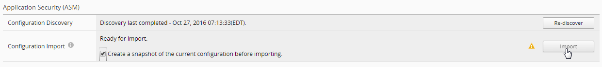

Community Training Classes & Labs > Agility 2018 BIG-IQ CM Access - Self Guided Index
4. BIG-IQ Partial Deployment | Partial Restore¶
4.1. WORKFLOW 1: Create multiple changes. Deploy single change. (REQUIRED)¶
4.1.1. Objective¶
The user has the ability to select a specific change out of many made for deploy.
4.1.2. Partial Deployment¶
Method 1 – Partial Deployment selection done from Deployment EVALUATE & DEPLOY.
- Add an additional node to pool member.
- ConfigurationPools: Enter “app1pool” in the upper right Filter and search, Select pool “app1pool” on either BOS-vBIGIP01 or 02.
- 1st change
- Click on New Member

Select from Existing Node “app1node1” on port 80 HTTP
Click on “Save and Close” on lower right
2nd change – Create a New Monitor “mon-https”
- Click on left navigation panel “Monitors” and click on “Create”
- New Monitor
- Name: mon-https
- Type: HTTPS
- Monitor template: https
- username: admin
- password: admin and confirm password.
- Click “Save and Close”
- Add newly created Health Monitor “mon-https” to Pool “app2pool”
- On Pools, search app2pool
- On Health Monitors, select /Common/mon-https

- Save and Close
- Create evaluation and deploy changes
- Click on top Deployment tab
- On left navigation panel, under EVALUATE & DEPLOY: Local Traffic & Network
- Click Create under Evaluations
- Name: partial-deploy
- From Evaluation: Source Scope, Select “Partial Changes”
- From Source Objects: Available, select “Pools”, from pool list, select “app1pool” for
- BOS-vBIGIP01 & 02, and add them to Selected on the right
- Under Target Devices, click “Find relevant devices”, select both and add to right
- Click “Create” to complete

*Note: Only changes to “app1pool” will be deployed.*
Deploy changes
Two methods to deploy
*Note: Method 2 will not be part of this deployment.*
Method 1
- Once Evaluation is completed, click on View link to see the differences

- Cancel to dismiss the popup window and click on Deploy under Evaluation
- Confirm by click on Deploy

Method 2: From “Configuration” tab on top, the user can select the source object and deploy
- Select both “app1pool” from Configuration: Pools, use filter if desired
- Click “Deploy”
- *Note: This will add to the source objects list automatically for the evaluation task.*
- Partial Changes is selected and “app1pool” for both LTMs are added to source object list for page to create evaluation task.
- You must use “Find relevant devices” to select the devices to move them to the right
- After evaluation is finished, click on “View” to see the difference
- Click on “Deploy now” in the Schedule area to deploy
Note: The deployment could fail if the targeted BIG-IP devices are not in full sync on configurations, due to timeout on waiting for sync to complete on target devices. Ensure the devices are in full sync before deploying changes.

4.2. WORKFLOW 2: Create and deploy multiple changes with selected roll-back. (REQUIRED)¶
4.2.1. Objective¶
4.2.2. Partial Restore – Roll Back a change¶
Note: Use the two changes made in the step above.
- Deployment: Evaluate & Deploy: Local Traffic & Network.
- Create task using “Source Scope: All Changes”
- Select Devices Targeted.
- Verify all changes are part of the deployment.
- Add node to pool “app1pool”
- Add Health Monitor to “app2pool”
- Deploy and observe completion

- To Rollback a change, you need to create a Partial Restore
Evaluation.
- Deployment: RESTORE: Local Traffic & Network.

Add name “partial-restore” and select the Snapshot created when deployment occurred.
*Note: Duplicate names are allowed so Deployment Date is provided as a reference.*
User can narrow the scope of the restore from Full to Partial. For this lab let’s select Partial Restore from the Restore Scope section.
*Note: User can “Create Evaluation” or if urgent “Restore Immediately”.*

Select “Add” for Source Objects
Select “/Common/app1pool” and “Add”.
Verify difference between BIG-IQ and Snapshot.
Save and Create
The user can restore the partial change defined from the Snapshot deployment.


{kind=link}
{kind=link}
{kind=link}
{kind=link}
{kind=link}
{kind=link}
{kind=link}